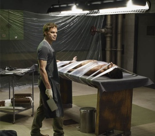

Welcome to the kill room
Welcome to YOUR appointment with the table all you Dexter fans. This fan site has been created to allow fans to interact with one another as well as get information on the show and catch up to anything you may have missed.
The One Table You Don't Want To Be At
Quick Facts
- Dexter has been on-air since 2006
- The Season 7 Premier is in September 2012, Don't Miss it!
- Dexter doesn't have any real enemies, there have only been three people who have hated him enough to do him in....they are all dead now.
- Dexter prefers to work alone, the one time he did have a protege, Asst. District Attorney. Miguel Prado, Prado wound up on Dexter's table because Prado was killing innocent people to further his career.
The Code
- Don't get caught
- Killing must serve a purpose, otherwise it's just plain murder
- Be sure
- Blend in -- maintain appearances
- Control urges, and channel them
Updates
Check here for show updates